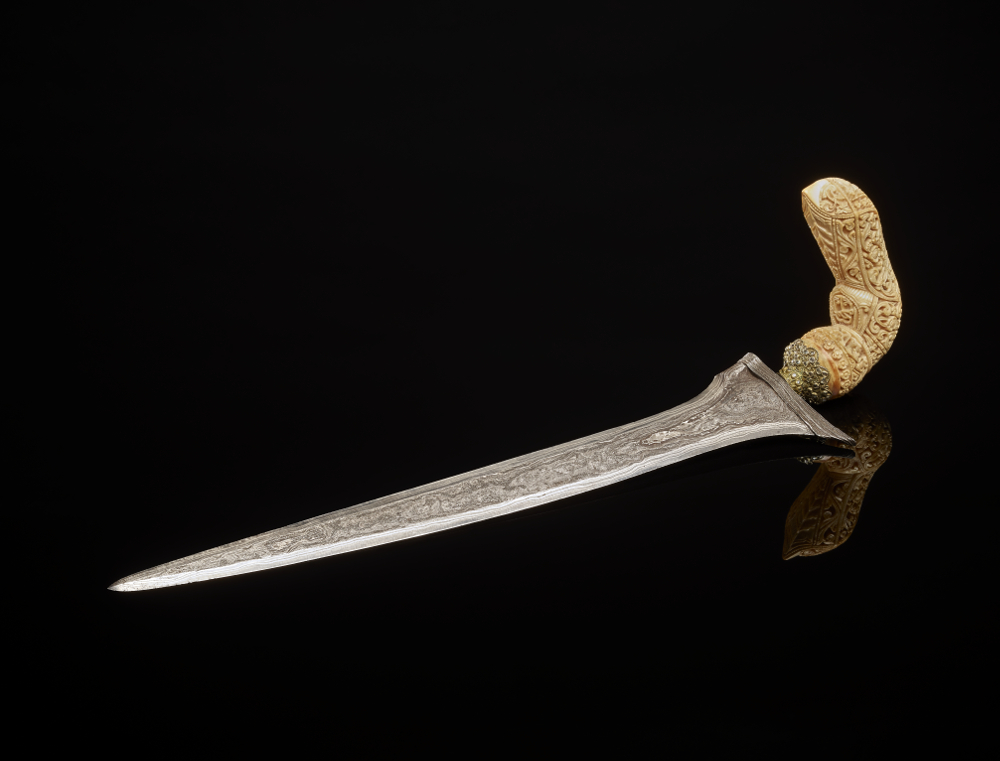

| 克力士礼器匕首和鞘 | |
| 苏拉威西岛 | |
|
这把精美的礼器匕首称为克力士（keris），是苏拉威西岛南部的布吉穆斯林制造的。苏拉威西岛是印尼第三大岛屿。印尼、马来西亚、文莱、泰国南部和菲律宾南部的伊斯兰社群均重视这种匕首。这些地区的其他宗教信徒，无论男女，也会使用它。 匕首的柄和鞘显示了它们的生产地。克力士匕首的柄可由木材、犄角、骨头、象牙等多种材质制成。这把地位非凡的匕首采用了象牙柄，并有镶钻石的金属项圈。 匕首的雕柄为鸟的形象，或许象征古印度神话中半人半鹰的神鸟迦楼罗。迦楼罗来自东南亚前伊斯兰时代。1950 年，迦楼罗成为印尼国徽的一部分，象征力量、守护和民族团结。 匕首华丽的木鞘，有别具一格的船形护手，另配有饰以花卉图案的镀金外壳。船形出现在艺术产物上，反映了东南亚的岛屿国家几世纪以来的海上贸易及往来。 一般认为克力士匕首的精神本质和力量体现在它的刃。此匕首采用典型的波浪形刃，但也有很多许多为直刃。刀匠采用铁矿石和天铁，层叠几十或数百次，锻造出独特的金属波浪纹饰。当地人相信匕首的锋刃会与佩戴者形成独特的联系，而这种联系通常无法转嫁于他人。  |
|